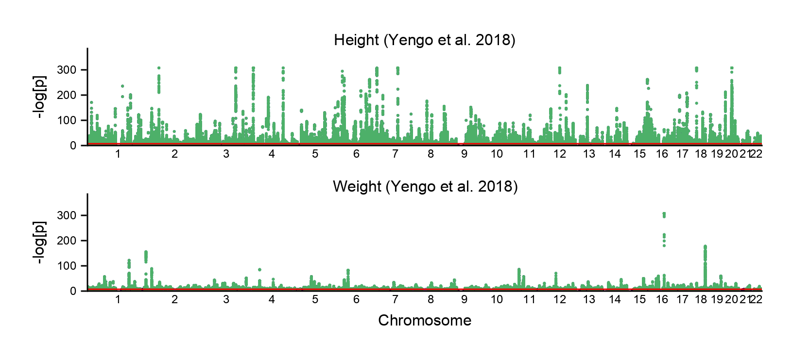
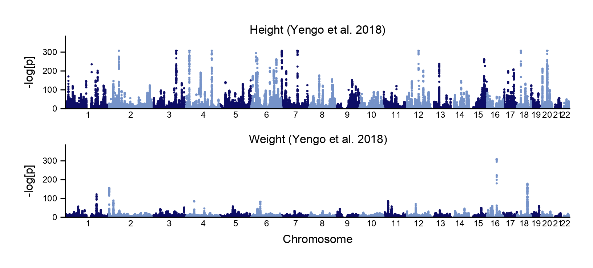
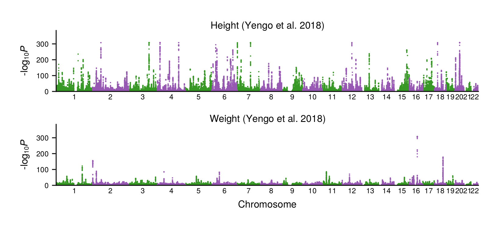
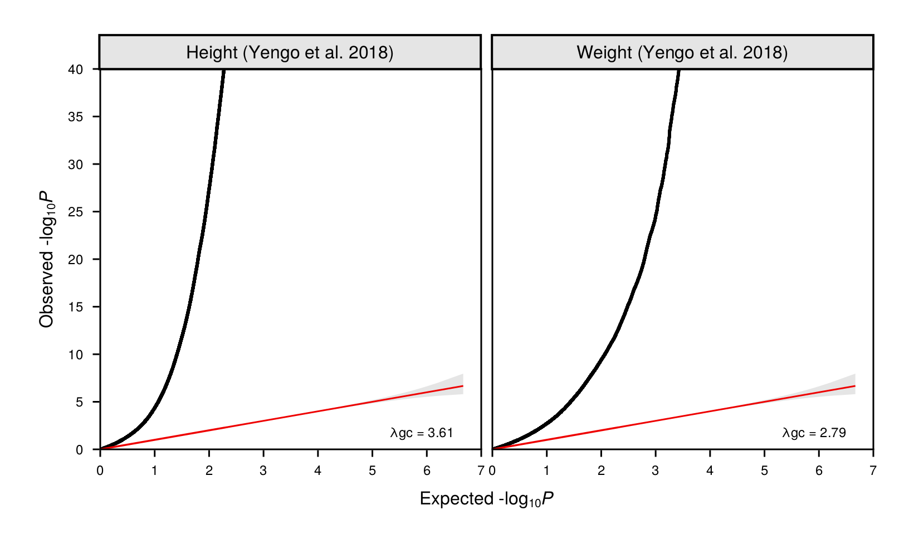

Plotting GWAS
After Munging summary statistics, we can use GeneticsMakie.plotgwas! to draw Manhattan plots.
using Pkg
Pkg.add(["GeneticsMakie", "CairoMakie", "DataFrames", "Arrow"])using GeneticsMakie, CairoMakie, DataFrames, Arrow
dfs = DataFrame[]
for key in ["height", "weight"]
push!(dfs, Arrow.Table("data/gwas/$(key).arrow")|> DataFrame)
end
titles = ["Height (Yengo et al. 2018)", "Weight (Yengo et al. 2018)"]f = Figure(resolution = (408, 792))
axs = [Axis(f[i, 1]) for i in 1:length(titles)]
for i in eachindex(titles)
GeneticsMakie.plotgwas!(axs[i], dfs[i])
hidespines!(axs[i], :t, :r)
Label(f[i, 1, Top()], text = "$(titles[i])", fontsize = 8)
rowsize!(f.layout, i, 50)
i == length(titles) ? axs[i].xlabel = "Chromosome" : axs[i].xlabel = ""
end
rowgap!(f.layout, 10)
resize_to_layout!(f)
f
By default, GeneticsMakie.plotgwas! highlights the genome-wide significant threshold and corresponding significant variants. We can turn off this option by using the linecolor and scattercolor keyword arguments.
f = Figure(resolution = (408, 792))
axs = [Axis(f[i, 1]) for i in 1:length(titles)]
for i in eachindex(titles)
GeneticsMakie.plotgwas!(axs[i], dfs[i]; linecolor = nothing, scattercolor = nothing)
hidespines!(axs[i], :t, :r)
Label(f[i, 1, Top()], text = "$(titles[i])", fontsize = 8)
rowsize!(f.layout, i, 50)
i == length(titles) ? axs[i].xlabel = "Chromosome" : axs[i].xlabel = ""
end
rowgap!(f.layout, 10)
resize_to_layout!(f)
f
We can color even and odd chromosomes with different colors by using the chromcolors keyword argument.
f = Figure(resolution = (408, 792))
axs = [Axis(f[i, 1]) for i in 1:length(titles)]
for i in eachindex(titles)
GeneticsMakie.plotgwas!(axs[i], dfs[i]; linecolor = nothing, scattercolor = nothing,
chromcolors = ["#389826", "#9658B2"])
hidespines!(axs[i], :t, :r)
Label(f[i, 1, Top()], text = "$(titles[i])", fontsize = 8)
rowsize!(f.layout, i, 50)
i == length(titles) ? axs[i].xlabel = "Chromosome" : axs[i].xlabel = ""
end
rowgap!(f.layout, 10)
resize_to_layout!(f)
f
We can then use GeneticsMakie.plotqq! to draw QQ plots.
f = Figure(resolution = (408, 792))
axs = [Axis(f[2, i]) for i in 1:length(titles)]
for i in eachindex(titles)
GeneticsMakie.plotqq!(axs[i], dfs[i]; ystep = 5)
axs[i].xlabel = ""
axs[i].ylabel = ""
ylims!(axs[i], 0, 40)
i > 1 ? hideydecorations!(axs[i]) : nothing
end
for (i, title) in enumerate(titles)
Box(f[1, i], color = :gray90)
Label(f[1, i], title, tellwidth = false, fontsize = 8, padding = (0, 0, 3, 3))
end
Label(f[3, 1:length(titles)], text = "Expected -log[p]", fontsize = 8)
Label(f[2, 0], text = "Observed -log[p]", fontsize = 8, rotation = pi / 2, tellheight = false)
rowsize!(f.layout, 2, Aspect(2, 1))
colgap!(f.layout, 5)
rowgap!(f.layout, 1, 0)
rowgap!(f.layout, 2, 5)
resize_to_layout!(f)
f